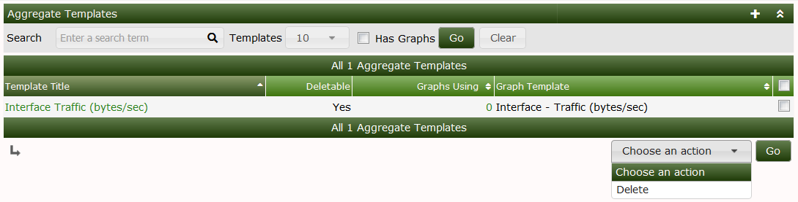
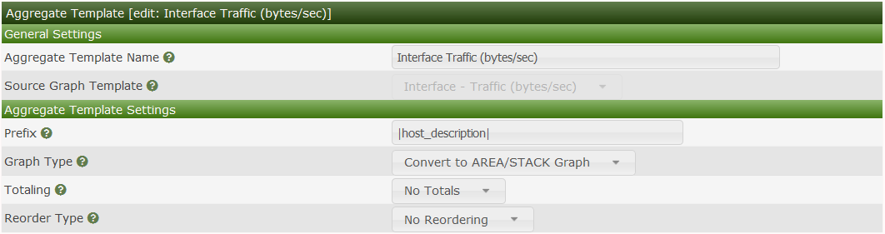
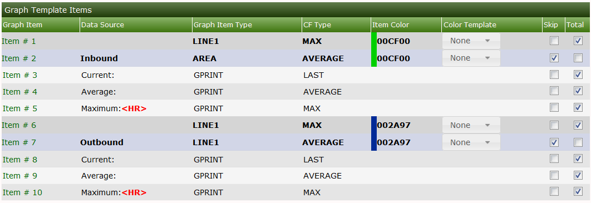
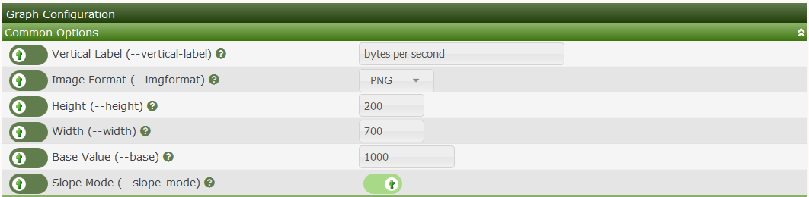
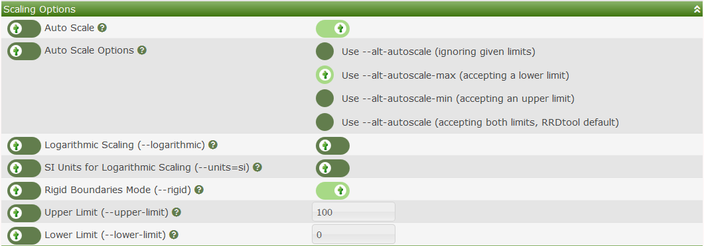
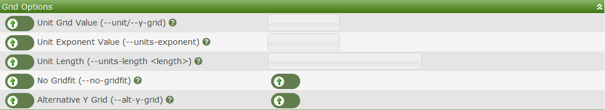
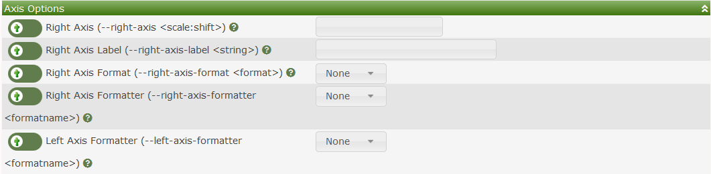
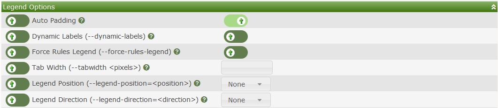

Aggregate Templates are a special form of a Graph Template. They allow you to easily create Graphs that combine data from multiple common Graphs from multiple Devices, and allow you to easily manage the resulting Aggregate Graphs to add and remove elements from other common Graphs.
To create Aggregate Graphs that are managed through a Template, you first must create the Aggregate Template. Then from the Cacti Graphs page, you can select the Graphs that you want used as part of the Aggregate. You then select Create Aggregate from Template from the Cacti Actions drop-down.
Once you have created your Aggregate Graphs, they behave like any other Cacti Graph. They can be a part of a Tree, zoomed, etc. They have an added bonus - you can add and remove Graphs from aggregate in a very controlled way, reducing the effort to maintain them during their life-cycle.
If you wish to change settings for Graphs managed by the Aggregate Template, simply make the changes in the Aggregate Template, and they will cascade to Aggregate Graphs managed by the Template.
The images below shows an Aggregate Template for Traffic.

When you edit the Aggregate Template, you are presented with an interface that allows you to define the Graph Canvas as well as it's formatting. You should experiment until you find the mechanism that works best to suite your needs.
The Aggregate Template Prefix setting allows you to provide a pattern to be applied to the Aggregate Graph legend items. Any host, query or input references can be used in the Prefix section in order to uniquely identify the Graph Item.
There are several Graph Types transformations that deal with how AREA, LINEX and STACK items are handled in the resulting Aggeregate Graph, they include:
AREA, LINE, and STACKS will be unchanged.LINEX will be converted to AREA and stacked.LINE1LINE2LINE3LINE1 and stacked.LINE2 and stacked.LINE3 and stacked.The Totaling setting has multiple values. They include:
The Total Type - Will create groupings of common elements on the Graph, and reset stacking rules when a change in the common element occurs. The options include:
traffic_out and traffic_in.When using Total Type, you are provided an option to additionally prefix your legends using the Prefix for GPRINT Totals with a text value. The default works in most cases.
The Reorder Type will re-order the Data Sources within their respective grouping on the Graph so that they are ordered in a common way, in alphabetic order. The options include:

The Graph Template Items section allows you to either Skip or Total (aka include) the Graph Items in the resulting Aggregate Graphs. When you think about how a resulting Aggregate graph will look, there are some elements that simply will not result in a good looking Graph. In those cases you will want to remove them from the resulting Aggregate Graphs.
The Color Template option allows you to use differing Color rotations when displaying elements on the resulting Aggregate Graphs. Color Templates can be added and removed from the Color Templates menu pick under Console > Templates.

The several sections allow you to override any of the common Graph Template elements from the resulting Aggregate Graph. We will not explain those options here, only let you know that you can override them in your resulting Aggregate Graph.





There are several combinations of options that you can use when working with an Aggregate Template. Some of these options will results in horrible and unexpected outcomes, so you will have to experiment until you come up with a desirable Aggregate Template.
Copyright (c) 2004-2024 The Cacti Group